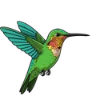

The Field-finds
Meet your neighbours.
A Field-find is the list of who lives in one place: the species seen there most often, and some of the most striking ones. It is not a score, and you don't have to finish it. Each list comes from real records, not a catalogue.

Loading…
The app has 25 Field-finds, from Los Flamencos Sanctuary in La Guajira to La Cocha Lake in Nariño, with 36 to 93 species each. Here you can browse three, in Valle del Cauca. Tap a species to see its photo and credit.